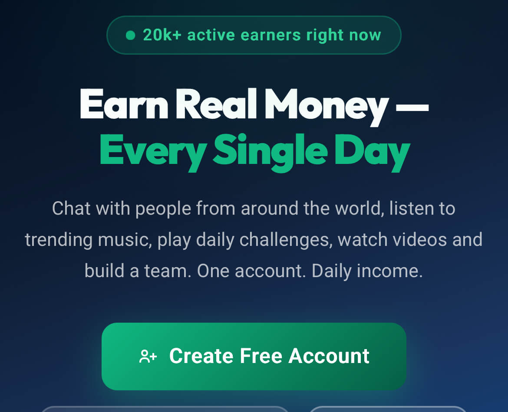
A User's Review of Mulaprime: Why Completing Daily Tasks Doesn't Guarantee Earnings Withdrawal
I was tempted to review Mulaprime by the numerous videos available on Tiktok that promote the platform. Users claim to enjoy mouth-watering earnings by just completing daily tasks.
Mulaprime is an online earning platform. It enables users to earn by completing daily online tasks including Fix Tap, watching Tiktok and Youtube videos, Trivia, Clicking Ads, Chatting with foreigners, Colour Challenge, streaming spotify music, and Answering Maths questions among others.
Joining Mulaprime
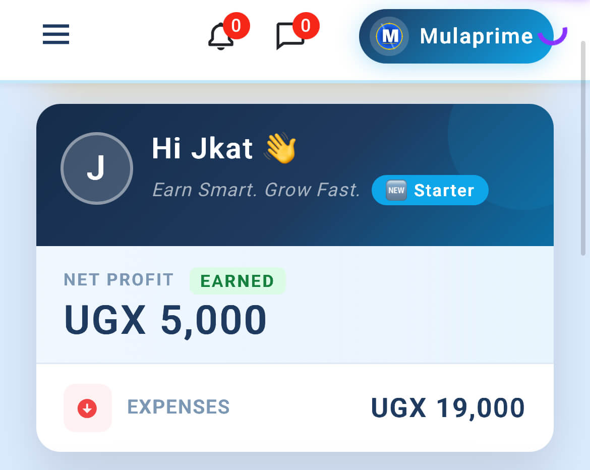
I searched google for "mulaprime". The first result is mulaprime.com. I clicked and signed up for an account. The signup process requires an active phone number and email address.
On successful signup, I was redirected to a paymennts page. Without paying the UGX 19,000, new users can't access the mulaprime platform. The only methods of payments are Airtel Money and Mtn Mobile Money.
Mulaprime's payment process is quite fishy. The payment goes to an individual Mobile Money account (Baguma Stephen) instead of a verified company account. I was required to comfirm payment by filling a form with the telphone number I used to pay as well as my Mulaprime username.
Mulaprime Dashboard
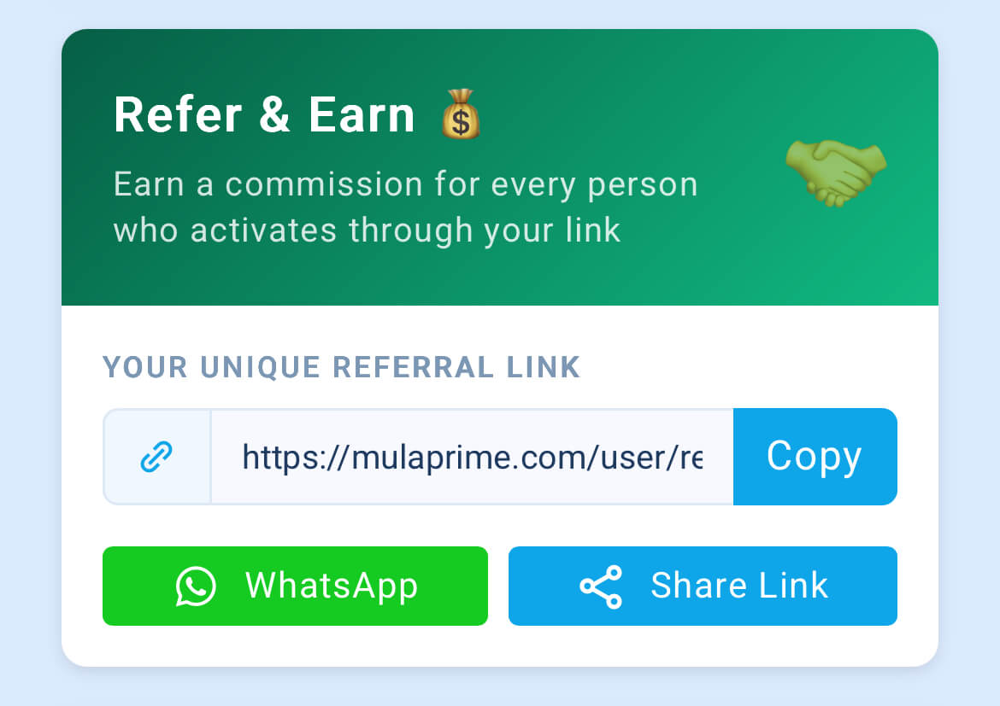
I had hoped to find the UGX 19,000 on my account. However, I only got UGX 5,000 styled as a Welcome Bonus. The Available balance was 0.0.
Mulaprime also generated an automatic referral link that I could copy or share via social media.
Under the Products category, Mulaprime listed 10 earning options including Earn with Spotify, Marketplace, Fix Tap, Chat with Foreigners, Colour Challenge, Youtube Videos, Tiktok Videos, Click Ads, Trivia Challenge, and Math for Fun.
I explain below how I completed each of these tasks.
Mulaprime Earning Tasks
Earn with Spotify
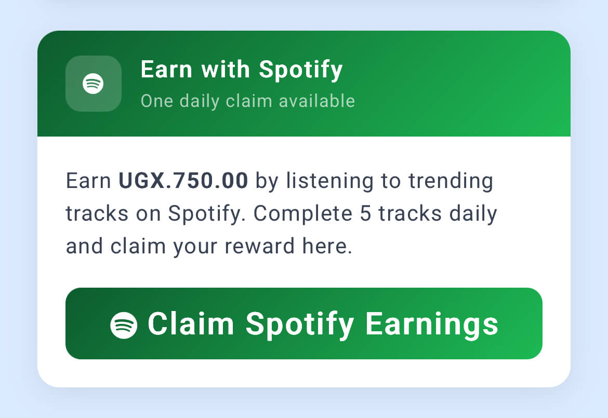
Earning with spotify got my attention first. I was one of the few realistic tasks. Mulaprime promises UGX 750 for for listening to 5 of the 10 trending tracks.
The trending songs for the day were The Weekend's Blinding Lights, Harry Styles' As It Was, Dua Lipa's Levitating, Justin Bieber's Stay, and Glass Animals' Heat Waves.
I played the 5 tracks and was prompted to click on a "Claim Spotify Earnings" button but no payment was made to my Mulaprime account. I thought it was some technical glitch and listened to the 5 tracks again. Same prompt and still no payment.
Fix Tap
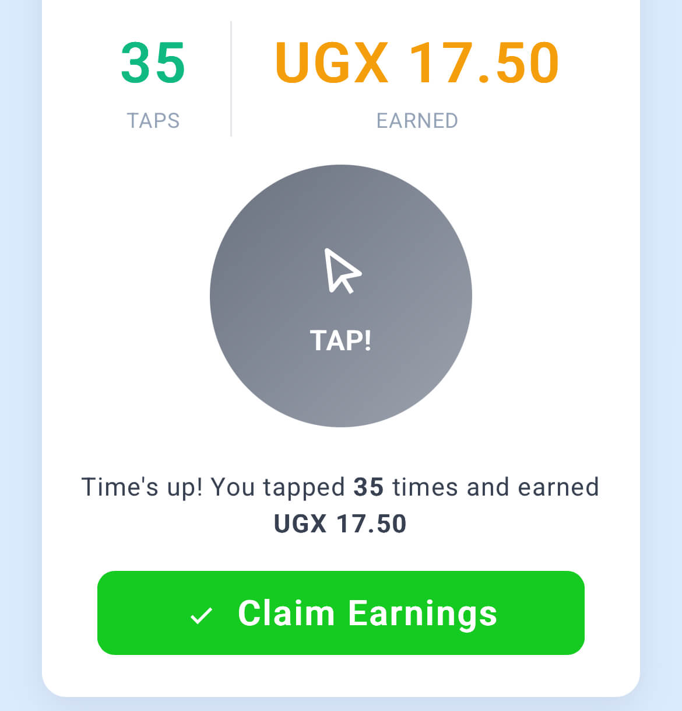
Mulaprime explains Fix Tap as a task that involves the continuously tapping a round green button for 10 seconds. Each tap earns the user UGX 0.5000. The offer is available once a day.
I was able to tap the green button 35 timees and earned a total of UGX 17.50. This brought my Mulaprime account balance to UGX 5018 (5000 Welcome Bonus and a rounded 17.5 from Fix Tap).
Stroop Colour Challenge
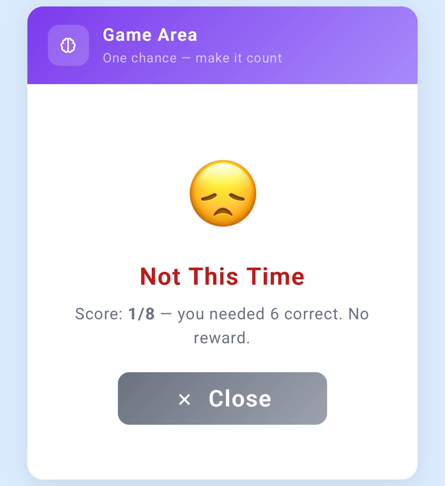
Mulaprime's stroop colour challenge involves the user choosing a word that corresponds to the displayed color. Each questions takes 3 seconds, and winning requires atleast 6 correct answers. Winning earns the user UGX 750. The user can only complete this task once a day.
I failed to get 6 correct answers so I wasn't paid for this task.
Youtube Videos
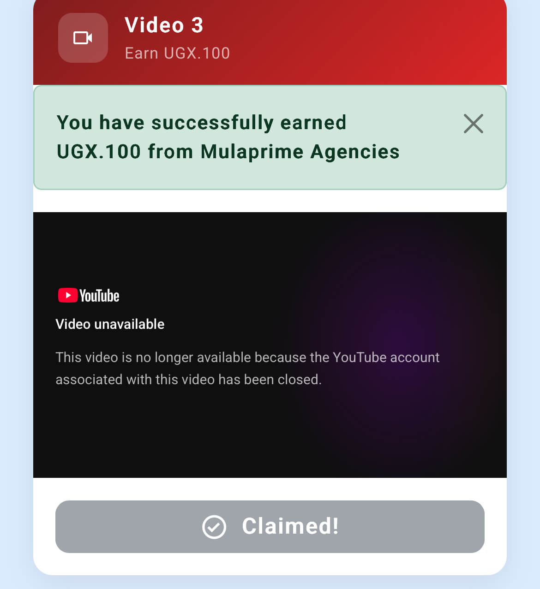
Each Mulaprime Youtube video the user watches earns UGX 100. The user can only watch 5 Youtube videos a day.
Videos included Adele's Rolling in the Deep, Vusi Thembekwayo's Going Through a Tough Time, Wiz Khalifah's See You Again, One Republic's Counting Stars, Katie Perry's Roar, and Adele's Hello. 3 videos were labelled as unavailable because "the Youtube account associated with this video has been closed"
I watched 5 videos earning a total of UGX 500. This brought my account balance to 5518
Mulaprime View Ads
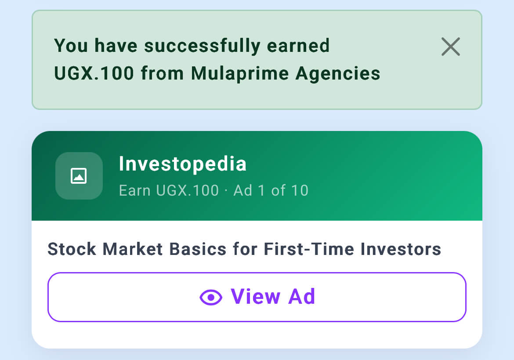
The View Ads task gets a user paid UGX 100 for each ad viewed. Available ads are supposedly from Techcrunch, Bloomberg, NerdWallet, WSJ, Forbes, Hubspot, Entrepreneur, and Investopedia.
Suprisingly, although each ad has a call-to-action and a button, the link leads to nowhere. It's a dead link. Now I wonder, why would Hubspot or NerdWallet pay for an ad whose link does lead to their website?
Anyways, I got paid UGX 100 for each ad, a total of 1000 for the 10 ads I viewed. My acccount balance rose to UGX 6518.
Chat with Foreigners
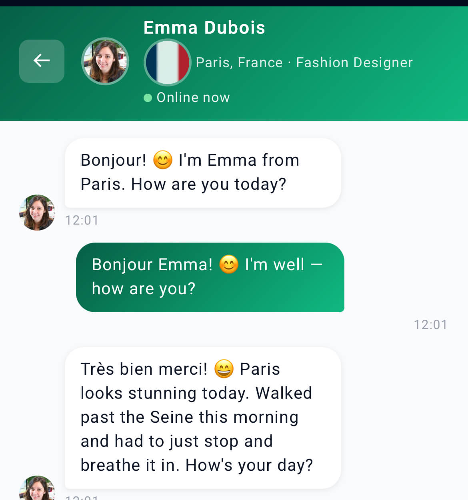
This is the most paying task on Mulaprime. Each five message session with a foreigner earns the user UGX 10,000. Like all the other tasks, the user can only complete this task once a day.
I chatted with Emma Dubois, a Fashion Designer from Paris. Emma Dubois is without doubt a bot. She (it) texted first but I couldn't reply with a custom response because the responses are already predetermined by Mulaprime. I only had to chose from 3 default options.
I think the bot would malfunction if the user was allowed to use custom replies. The bot was only trained to reply to a set of predetemined responses.
For interacting with Emma Dubois with 5 auto responses, I was paid UGX 10,000. Too good to be legit. Balance now was 16518
Mulaprime Math for Fun
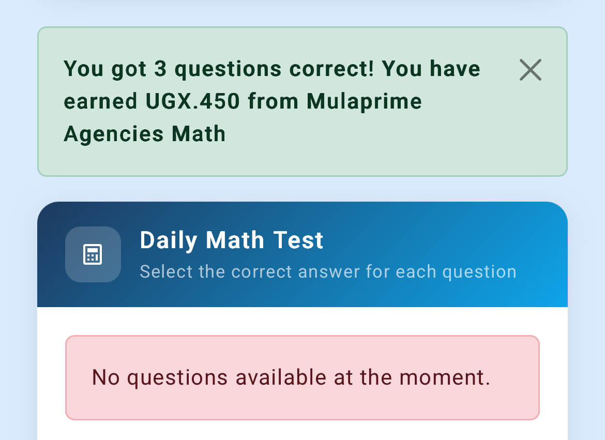
Math for Fun offers the user 6 daily maths questions and pays UGX 150 for each correct answer. The user chooses the correct anser from three options.
I didn't try to calculate. I just picked the answers randomly and was able to get 3 correct answers. Mulaprime paid me UGX 450. Balance: 16968.
Loans
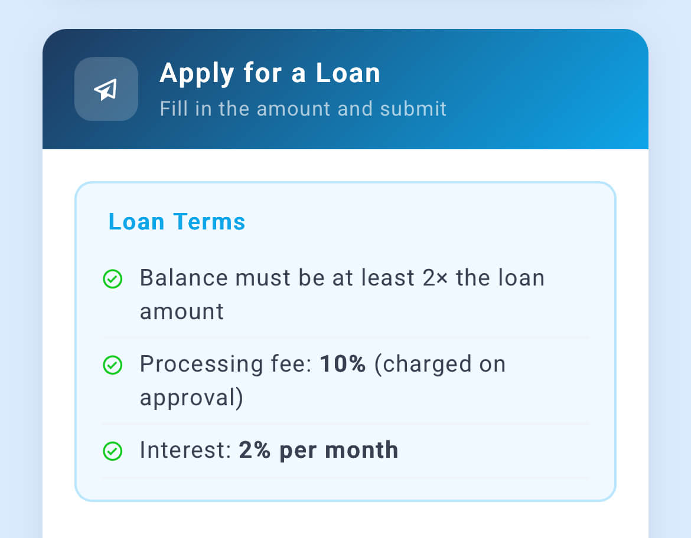
I tried the Loan feature last. This was because Mulaprime's laon policy requires the user to have some earnings balance before qualifying for a loan. The total loan a user can get should be less than 1/3 of the user's account balance. I had to have some balance before I applied for a loan.
I applied for UGX 5000, well within Mulaprime's account balance policy range. Unfortunately, I was informed I didn't qualify. Just that, no further explanation.
Withdraw of Earnings
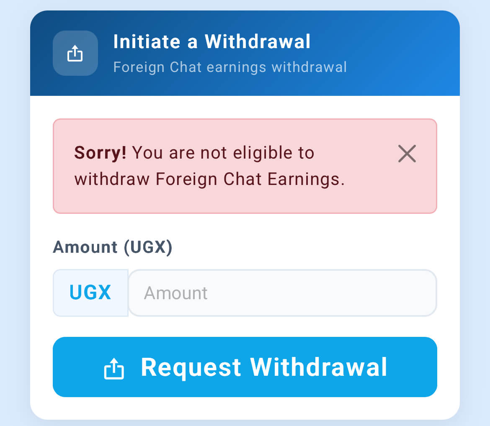
Having earned almost close to what I had invested as activation fees, I headed to Mulaprime's withdraw section. Each earning option has its own withdraw section.
I started with the Chat with Foreigners earnings. The withdrawal was rejected with "Sorry! You are not eligible to Withdraw Foreign Chat Earnings". I then tried ad earnings but the same notice poped up. In all instances, no explanantion was given for why I couldn't withdraw my earnings.
So, although I could see the earnings in my Mulaprime account, I couldn't withdraw them.
Final Thoughts
Mulaprime is not transparent with users' potential earnings. Mulaprime's landing page shows massive potential earnings of yet the actual earnings are very low. Mulaprime promises UGX 12000 for each Color Challenge win but pays UGX 100, UGX 17,000 for each chat with a foreigner but pays UGX 10,000, UGX 2000 for 1 youtube video but pays 100, UGX 5000 for 1 spotify stream but only pays UGX 150.
And even when you have earned the little they offer, Mulaprime will not allow you to withdraw. The tasks are there to create an impression of earning. The only way one can earn is by referring a new user. Part of the activation fee the new user pays is what is paid to the referring user as commission.
Read Next Article →